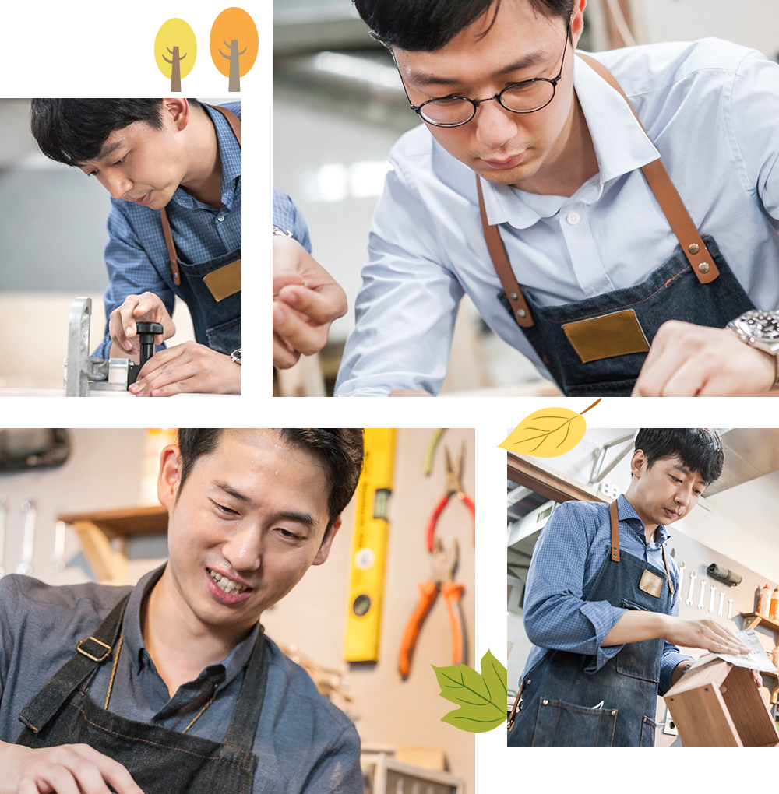

와 제 롤모델이 잡스에요!!! 아이폰 첫 출시되고 나서부터 계속 아이폰 쓰고 있는데 잡스가 너무 그리워요ㅠㅠ 지금은 돈만 벌려고 하는 것 같아서 디자인 발전도 없고ㅠㅠ와 제 롤모델이 잡스에요!!! 아이폰 첫 출시되고 나서부터 계속 아이폰 쓰고 있는데 잡스가 너무 그리워요ㅠㅠ 지금은 돈만 벌려고 하는 것 같아서 디자인 발전도 없고ㅠㅠ와 제 롤모델이 잡스에요!!! 아이폰 첫 출시되고 나서부터 계속 아이폰 쓰고 있는데 잡스가 너무 그리워요ㅠㅠ 지금은 돈만 벌려고 하는 것 같아서 디자인 발전도 없고ㅠㅠ와 제 롤모델이 잡스에요!!! 아이폰 첫 출시되고 나서부터 계속 아이폰 쓰고 있는데 잡스가 너무 그리워요ㅠㅠ 지금은 돈만 벌려고 하는 것 같아서 디자인 발전도 없고ㅠㅠ와 제 롤모델이 잡스에요!!! 아이폰 첫 출시되고 나서부터 계속 아이폰 쓰고 있는데 잡스가 너무 그리워요ㅠㅠ 지금은 돈만 벌려고 하는 것 같아서 디자인 발전도 없고ㅠㅠ
오! 해피데이
원데이 목공 클래스
시간과 정성으로 길들인 DIY 원목조명
그냥 봐도 멋지고, 불을 켜면 더 멋지다. 이번 도전 종목은 마음까지 밝혀줄 원목조명 만들기다. 수공의 멋과 맛을 아는 네 명의 도전자가 함께했다. 두 시간 뒤 수업이 끝나자 거짓말처럼 뚝딱, 나만의 빛이 나무속으로 스며들어갔다.
그냥 봐도 멋지고,
불을 켜면 더 멋지다.
이번 도전 종목은 마음까지 밝혀줄
원목조명 만들기다.
수공의 멋과 맛을 아는
네 명의 도전자가 함께했다.
두 시간 뒤 수업이 끝나자
거짓말처럼 뚝딱, 나만의 빛이
나무속으로 스며들어갔다.
글편집실
사진정우철
촬영 협조해쉬더우드 목공방
감각을 자극하는 나무테라피
구수한 톱밥 냄새와 리드미컬한 망치소리가 오감을 깨운다. 서울 용산구의 한 공방 안에서 초보 목수들이 예술혼을 불태운다. 오늘 도전할 종목은 군더더기 없는 디자인의 원목조명이다. 차가운 물성의 전구를 천연 원목이 따뜻하게 감싸 안아 빛은 한층 따뜻해진다. 감각적인 곡선 디테일 덕분에 인테리어 소품으로도 그만이다. 원목조명 만들기는 그리 어렵지 않다. 우선, 어떤 용도로 어느 장소에 배치할 것인지를 결정하고 사이즈를 잰 후 도안을 그린다. 원하는 재질의 나무를 선택해 도면에 맞게 재단하고, 나사못으로 조립한다. 나뭇결을 살리기 위해 쓱싹쓱싹 사포질하고 천연오일로 마감하면 세상 단 하나뿐인 원목조명이 완성된다.
“시간이 지나도 변치 않는 가구를 직접 만들어보자!”는 강사의 말을 시작으로, 2인 1조로 팀을 꾸린 도전자들이 일제히 전의를 불태운다. “좋은 가구를 두고 ‘음양(陰陽)의 화합’이라고 합니다. 서로 다른 재질의 목재가 어우러져 하나가 되는데, 완벽한 한 몸이 되기까지는 시간이 필요한 법이거든요. 거기다 그 나무의 수명까지 헤아려보면 100년, 1000년 단위로 넘어가죠. 하나의 나무가 가구로 다시 태어나기까지, 한 사람과 나무의 인연이 이렇게나 길고 진득합니다.”
자연의 섭리가 몸에 밴 나무의 일대기는 그 자체로 큰 스승이다. 자세히 들여다보면 색깔도 문양도 가지각색이다. 보통 나무를 구해온 다음 무늬 있는 부분을 잘라 쓰는데, 어떤 작품을 만들어야 이 나무가 가장 멋지게 변할지를 상상하는 과정이 창작의 첫 단계다. 아름다운 무늬가 있는 부분을 따서 만든 목가구는 말하자면 ‘자연이 그린 그림’을 입는 셈이다.

시너지도 ‘발광(發光)’
흙 냄새인 듯 나무 냄새인 듯 맑고 청신한 향을 맡아보고 손으로 감촉을 느끼며 나무와 점점 친해져가는 네 사람. 나무를 고르고 자르고 붙이는 매 순간, 자연과 노니는 호사에 몸과 마음에 생기가 돈다. 난생 처음 만져보는 다양한 공구들도 흥미를 더한다. 재단한 원목을 옮기는 동안에도, 전선을 연결할 나무에 구멍을 뚫는 그 잠깐의 시간에도, 모두들 자연스럽게 이야깃거리를 찾아냈다.
“직접 경험해보니 목공의 재미와 몰입도가 최고네요. 새로운 취미 하나 얻어가는 기분입니다”라며 유정민 대리가 열의를 불태운다. 파트너 우동준 대리도 “손맛이 느껴져 좋아요. 사실 요즘 직장인들은 기껏해야 키보드를 두드리거나 스마트폰, 서류 정도만 만지며 살잖아요. 이러다가 손쓰는 법을 잊게 되는 건 아닐까 싶었는데, 오랜만에 내 손으로 실용적인 작품을 완성하니 보람이 큽니다”라며 만족감을 표했다.

나무를 다루는 일이다 보니 구석구석 자세히 들여다보는 매 순간이 흥미롭다. 기계로 찍어내는 것보다는 아무래도 덜 정교하고 시간도 오래 걸리지만, 실제로 손수 깎고 다듬고 칠하는 재미가 꽤 크다. 어느덧 작업도 막바지에 돌입했다. 나무에 구멍을 뚫어 전선을 배선하고 전구를 끼운 다음, 이니셜을 새기는 손끝마다 정성이 가득하다. 별다른 정체성이 없던 나무가 하나의 작품이 되는 동안 팀워크도 차곡차곡 쌓인다.
같은 팀 이미연 사원과 함께 환상의 팀워크를 선보인 전정태 과장은 “서로 잡아주고 보조해준 덕분에 순탄하게 완성할 수 있었어요. 못 하나 박는 데도 ‘내가 이렇게 잡아주면 파트너가 좀 더 편하게 할 수 있겠다’는 고민을 했는데요. 기본적으로 회사에서 혼자 혹은 한 팀에서 할 수 있는 일은 거의 없잖아요. 각자 맡은 역할을 잘 수행하고, 힘든 동료의 손을 잡아줘야죠”라는 말로 모두를 웃게 했다.
바로 옆에서 “택커 쏠 때의 쾌감이 굉장하다!”며 흥분을 감추지 못하는 이미연 사원도 오늘을 계기로 ‘장비 좀 다룰 줄 아는 여자’가 됐다며 엄지를 치켜든다. “강사님의 배려로 스피커 공정 이외에도 다양한 나무를 잘라 보고 장비도 직접 다뤄볼 수 있었어요. 꿈꿔왔던 로망을 맛보기로 체험해보고 나니, 목공에 대한 흥미가 더욱 배가 됐어요.”
밋밋했던 나무 위에 새로운 이야기를 덧입힌다. 완성된 작품 하나하나도 근사하지만 한데 모아놓고 불을 켜니 그 조화가 더욱 아름답다며 다들 인증샷 촬영에 시간 가는 줄 모른다. 이게 끝이 아니다. 쓸수록 무르익는 빈티지한 매력이야말로 시간의 흐름으로 만들어내는 고유한 멋이다. 이니셜까지 오롯이 각인된 나만의 조명을 들고 돌아가는 마음이 나무프레임 속 전구처럼 환하다.
Mini Interview
-
전정태 과장항만계약관리팀어릴 적 원목공장 근처에서 자주 놀았어요. 오랜만에 톱밥 냄새를 맡고 있자니 옛 추억이 새록새록 떠오르네요. 유치원 이후로 최고의 눈높이 교육을 펼쳐주신 강사님께도 감사를 전합니다.(웃음) 몹쓸 손재주 때문에 시행착오도 많았는데, 완성도 높은 결과물이 나와 뿌듯해요. 빛의 속도로 촬영해 SNS 프로필 사진으로 바꿔 놓았답니다. 공구 다루는 법도 어느 정도 손에 익었으니, 난이도를 높여 조만간 다른 가구에도 도전해보려고요.
-
우동준 대리컨테이너운항팀목공은 처음인데, 전반적으로 기계 사용하는 게 만만치 않더라고요. 이렇게 집중해서 뭔가를 만들어본 건 정말이지 오랜만인 것 같아요. 생각보다 손이 많이 가는 작업이었지만, 손맛에 매료돼 시간 가는 줄도 몰랐습니다. 전선을 연결해 마침내 전구에 불이 들어오는 순간은 뭐랄까, 내 손으로 생명을 불어넣는다는 기분도 들고요. 내 손으로 땀 흘려 만든 첫 가구는 책상 위에 올려둘 예정입니다.
-
유정민 대리드라이벌크2팀사실 조립만 하면 되는 줄 알고 왔는데, 의외로 공정이 많더라고요. 제가 또 좌우 대칭에 집착하는 성향이 있는데, 나사 맞추기가 쉽지 않아 마음고생을 좀 했어요.(웃음) 제 건 물론이고, 파트너인 우동준 대리의 목재를 잡아줄 때도 대칭이 안 맞는 것 같아 마음이 무거웠는데, 쿨하디 쿨한 파트너가 “원래 언밸런스를 좋아한다”고 말해줘 고마웠습니다. 두 시간 동안 몰입해 완성한 조명이 제 아지트인 컴퓨터방을 환히 밝혀주길 바랍니다.
-
이미연 사원항만계약관리팀‘원목 덕후’로서 지나칠 수 없는 이벤트였죠. 나무 본연의 색과 질감이 주는 따뜻한 느낌이 좋더라고요. 톱 다루는 게 무서웠는데 안전장치가 잘돼있고 2인 1조로 진행해 훨씬 수월했어요. 사무실에서도 옆자리인 전정태 과장님과 함께해 더 즐거웠던 것 같아요. 평소 밝은 형광등 불빛이 부담스러워 밤에도 불을 잘 안 켜는데, 이 무드등은 밝기도 적당하고 디자인도 예뻐 만족도 1000%입니다. 취향저격 조명을 손수 제작한 보람이 큽니다.
#Tag
- #아크릴화원데이클래스 #신슬미 #이지헌 #홍성범 #하지윤
-
최고예요
322
-
좋아요
322
-
슬퍼요
322
-
그저 그래요
322
-
화나요
322